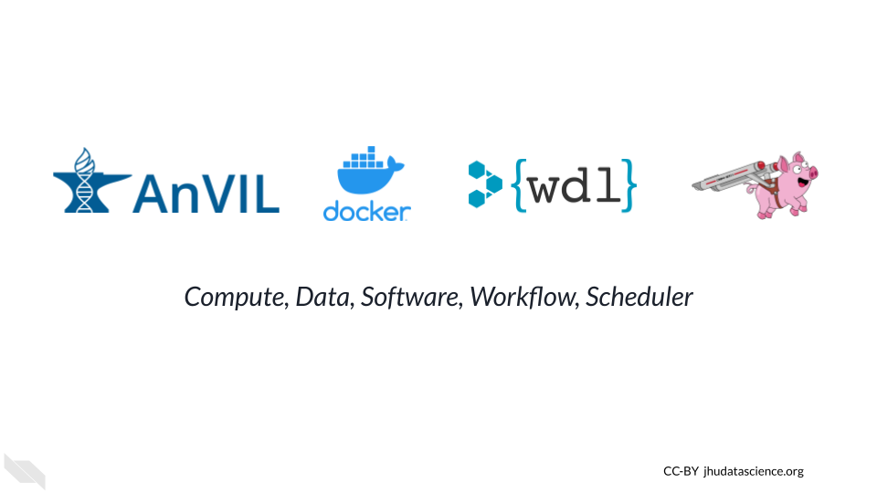

WDL Workflows
March 22, 2023
Overview
This book introduces WDL Workflows on AnVIL. After introducing several concepts, including basic WDL syntax, we present hands-on exercises to run a workflow, write a WDL, localize a file, customize a Docker image, and join the Discourse. No local software installation is required as each exercise leverages web-based resources.
## Warning: replacing previous import 'ellipsis::check_dots_unnamed' by
## 'rlang::check_dots_unnamed' when loading 'tibble'## Warning: replacing previous import 'ellipsis::check_dots_used' by
## 'rlang::check_dots_used' when loading 'tibble'## Warning: replacing previous import 'ellipsis::check_dots_empty' by
## 'rlang::check_dots_empty' when loading 'tibble'## Warning: replacing previous import 'ellipsis::check_dots_unnamed' by
## 'rlang::check_dots_unnamed' when loading 'pillar'## Warning: replacing previous import 'ellipsis::check_dots_used' by
## 'rlang::check_dots_used' when loading 'pillar'## Warning: replacing previous import 'ellipsis::check_dots_empty' by
## 'rlang::check_dots_empty' when loading 'pillar'
Skills Level
Genetics
Novice: No genetics knowledge needed
Programming skills
Novice: No programming experience needed
Learning Objectives
- Understand when WDL Workflows are the right tool
- Run a Workflow on AnVIL
- Write a WDL using Broad Methods Repository
- Bring your own data to analyze
- Customize your Docker environment
- Join the conversation
AnVIL Collection
Please check out our full collection of AnVIL resources below!
| Book Name | Description | Topics |
|---|---|---|
| AnVIL Phylogenetic-Techniques (github) | A semester-long course on the basics of molecular phylogenetic techniques | anvil |
| AnVIL: Getting Started (github) | A guide for getting started using AnVIL | anvil, cloud-computing |
| AnVIL: Instructor Guide (github) | A guide for instructors using AnVIL for workshops, lessons, or courses. | anvil, education |
| GDSCN: SARS Galaxy on AnVIL (github) | Lab module and lectures for variant detection in SARS-CoV-2 using Galaxy | anvil, genomics, module |
| GDSCN: Statistics for Genomics Differential Expression (github) | A set of lab modules for an introduction to differential gene expression | anvil, cloud-computing, gene-expression |
| GDSCN: Statistics for Genomics PCA (github) | A set of lab modules for PCA analysis | anvil |
| GDSCN: Statistics for Genomics RNA-seq (github) | A set of lab modules for RNA-seq analysis | anvil |
| GDSCN: Statistics for Genomics scRNA-seq (github) | A set of lab modules for single cell RNA-seq analysis | anvil |